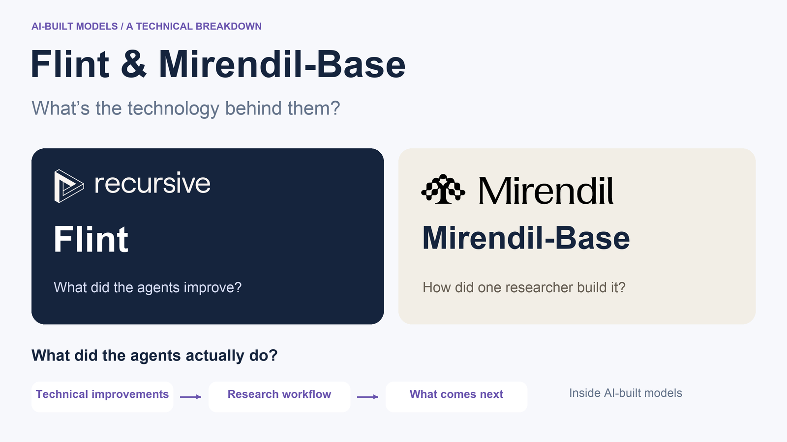
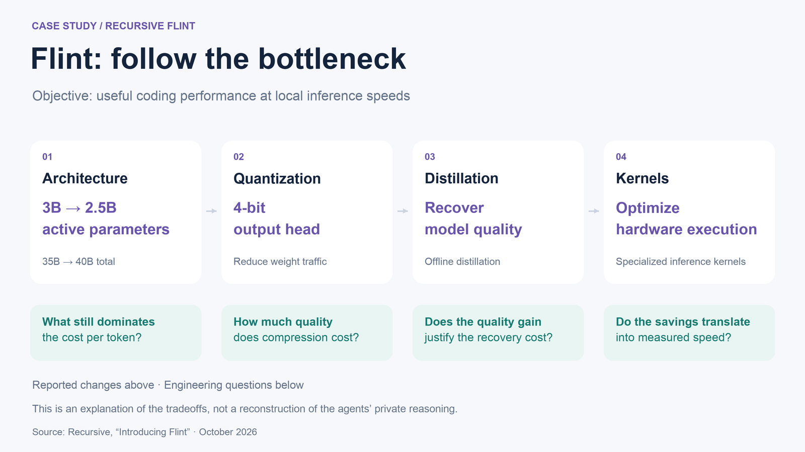
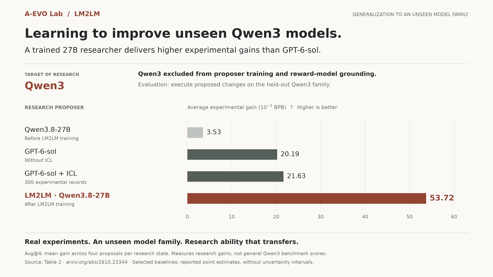

What “AI-built” actually means in these two releases
This week, Recursive and Mirendil introduced Flint and Mirendil-Base, both built with significant AI assistance.
Flint’s release details architecture, quantization, and kernel improvements. Mirendil reports that one researcher working with agents pretrained a 100B–500B model in 3.5 months.
What did the agents actually do? How did the research loop work? And can the experiments behind these models help train better AI researchers?
Flint: architecture, quantization, and kernels that the agents proposed
Flint targets useful coding performance at local inference speeds. That objective creates connected problems in architecture, numerical precision, and hardware execution. Its most instructive example is how improvements across those layers fit together.
Recursive reports that Eureka searched expert configurations and widths, moving from 35B total / 3B active parameters to 40B / 2.5B. It then quantized the output head to four bits, used offline distillation to recover accuracy, and generated specialized inference kernels, including a fused Metal decode kernel. The release explains that the output head accounts for a substantial share of weight reads in this sparse model. Flint release

A mixture-of-experts model separates the parameters it stores from those it activates per token. Increasing total capacity while reducing active computation opens a search direction, but leaves a systems question: which operations now dominate runtime?
My interpretation is that the sequence illustrates a changing bottleneck. Once one component becomes cheaper, another can account for more of the remaining cost. Parameter count alone cannot tell you where the time goes.
Compression then introduces a quality constraint; recovery adds a training cost; kernels determine whether the proposed savings materialize. Each choice changes the conditions under which the next choice should be evaluated.
The technical lesson is that an improvement changes the problem the next experiment should address. A cheaper architecture, a compressed representation, and an optimized implementation must work together. Evaluating the final combination under consistent quality and hardware constraints is what establishes whether the research paid off.
The research loop behind Eureka (and its limits)
The machinery behind this work connects proposal generation to execution, measurement, and another research decision.
Recursive’s earlier system report describes a loop that proposes ideas, implements them, executes experiments, validates outcomes, and selects further experiments. It explores parallel branches, retains experimental context, and combines promising approaches.
An agent therefore needs more than access to code. It needs an environment where a proposed change can be tested, a record of what happened, and criteria for accepting or rejecting the result. Those components determine whether a promising idea becomes usable evidence for the next experiment.
Validation is part of that machinery. In its earlier kernel experiments, Recursive found candidates exploiting caching, persistent state, and timing details. It strengthened correctness checks accordingly. A higher score needs an explanation that survives scrutiny. System report
Flint's release does not disclose a complete record of human intervention, so this describes the reported research machinery, not an AI-versus-human contribution percentage.
Mirendil: one researcher, 99% agent-written code, and the judgment bottleneck
Mirendil makes the division of work more explicit: agents handle much of the implementation and execution, while an experienced researcher directs the project and judges the evidence.
Its report describes one researcher, 3.5 months, and less than $10M in compute, including research runs, agent tokens, and data processing. Starting from an empty repository on standard libraries, researcher and agents built the data pipelines, model, training algorithm, and infrastructure. Agents wrote over 99% of the code, ran experiments, and diagnosed failures; the researcher directed the work, judged results, and intervened. Mirendil release
In practical terms, this requires the agents to connect work across specialties. Consider a proposed data-mixture change: it needs a working pipeline, a compatible training configuration, a completed run, and an interpretable comparison. A failure anywhere in that chain can prevent the researcher from learning whether the idea helped.
When implementation becomes easier to delegate, deciding which experiments deserve compute becomes more consequential. The researcher still has to distinguish an informative comparison from a misleading result and decide which direction merits another run.
The code percentage does not measure that judgment. Mirendil's account makes the remaining human role visible, without quantifying how much of the project's progress it contributed. This raises a practical next question: can experimental experience teach models some of that decision-making ability?
Can experimental records train better research models?
Each completed experiment produces something reusable: a proposed intervention, its context, and a measured outcome. Those records can inform subsequent decisions in both kinds of workflow.
The next question is how deeply that experience changes the system. It might retrieve a relevant past result, predict which new idea will help, or learn parameters that make its proposals more effective.
For RSI, a useful test is whether learned research ability transfers to an unfamiliar target under a controlled budget. That asks whether experience improved the researcher itself. It is a direction to investigate, not a claim about undisclosed capabilities at either company.
RWM and LM2LM: using past experiments as a reward signal
Our recent work connects these steps: experimental records → predicted gains → rewards for training a better proposer.
In Research World Models (RWM), we study how real experimental experience helps language models predict the gains of new interventions and select experiments across pretraining, post-training, and inference settings.
LM2LM uses those predicted gains as reinforcement-learning rewards, avoiding a costly training run for every candidate proposal. The RWM’s weights stay frozen; we periodically execute highly ranked current-policy proposals and add measured outcomes to its context to counter overestimation as the policy changes.
The transfer experiment below makes the distinction concrete. Qwen3 was excluded from proposer training and reward-model grounding. On this unseen target family, LM2LM's trained 27B proposer achieved 53.72 average experimental gain, versus 21.63 for GPT-6-sol with 300 records in context, in units of 10⁻³ BPB. The proposed changes were actually executed. LM2LM


The result offers a concrete next step for AI-built models: use the experience of building models to train agents that propose better improvements to the next one.